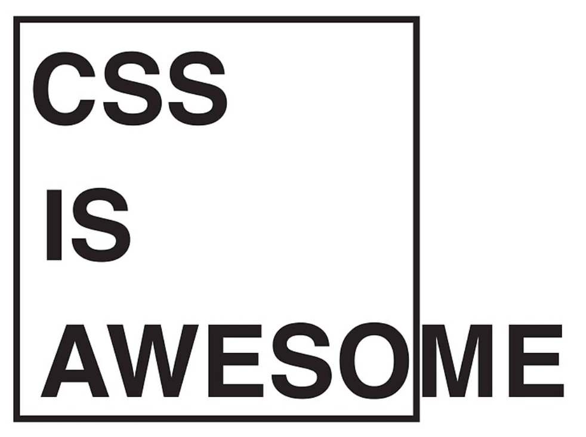
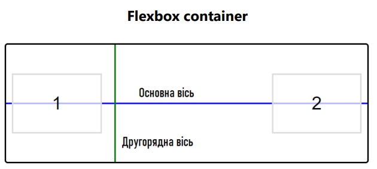
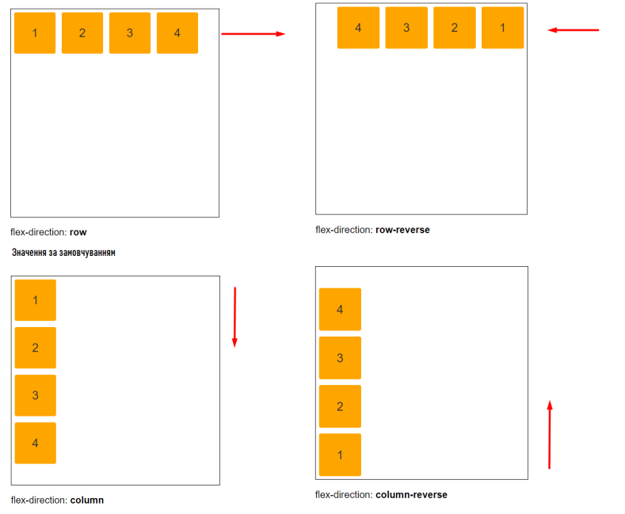
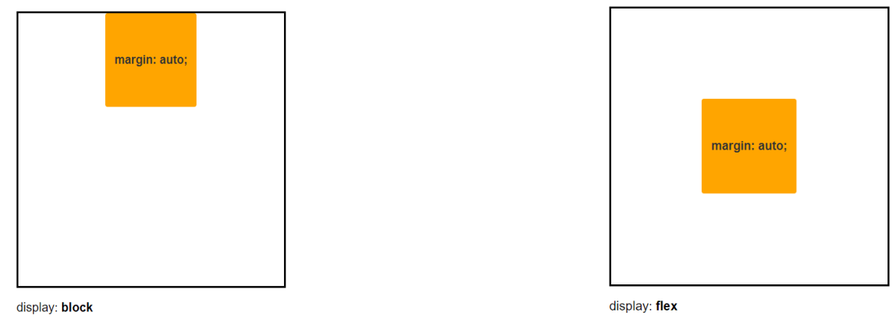

Лекція 11. Генерований вміст, лейаути
Лекція 11. Генерований вміст, лейаути
План лекції:
- Генерований вміст
- Лейаути (CSS layout)
- Значення та одиниці вимірювання в CSS
- Flexbox
- Стилі для різних середовищ

Генерований вміст
Генерований вміст (або generated content) в CSS — це контент, який додається до веб-сторінки динамічно
через CSS
без змін в HTML-коді. Він дозволяє вставляти текстові або графічні елементи на основі стилів, використовуючи
псевдоелементи ::before та ::after.
Основне використання генерованого вмісту полягає у вставці декоративних елементів, іконок або додаткового тексту
без необхідності змінювати структуру HTML. Це дає більше контролю над зовнішнім виглядом елементів через стилі.
Лейаути (CSS layout)
Лейаути (CSS layout) — це спосіб розміщення елементів на веб-сторінці за допомогою CSS. Вони дозволяють
визначати, як блоки контенту, такі як тексти, зображення, кнопки, та інші HTML-елементи, відображаються на
екрані.
Лейаути допомагають створювати зручні та привабливі інтерфейси для користувачів, забезпечуючи
адаптивність та гнучкість дизайну на різних пристроях.
Лейаути (CSS layout)
Перед вивченням CSS layout ви повинні:
- Мати загальне уявлення про HTML, семантична розмітка
- Орієнтуватися в основах CSS
- Розуміти, як стилізувати блокові елементи
Основні техніки лейаутів у CSS
У побудові лейаута є кілька завдань:
-
Розташувати контент горизонтально:
display: inline-block,
display: grid,
display: flex,
float: left,
position: absolute
таблиця
- Зробити так, щоб контент не переповнював колонку:
min-width,
overflow,
таблиця
- Зробити так, щоб колонки
ніколи не провалювалися одна
під іншу:
white-space: nowrap;
сума ширин float-блоків
завжди дорівнює або менше
ширини батька
- Відступи, бордери та фон зазвичай вкладений елемент,
щоб не допустити ширини > 100%
(50% + 10px || + 10px 50%)
Основні техніки лейаутів у CSS
Значення та одиниці вимірювання в CSS
- Пікселі (px) - Одиниця px визначає розмір у пікселях. Зазвичай один піксель відповідає одній точці екрана,
але для принтерів і дисплеїв з високою роздільною здатністю (таких як Apple Retina або екрани смартфонів)
один піксель може містити кілька точок.
- Відсоткові значення %
- em/rem/ex
- vh, vw, vmin, vmax
- calc()
CSS Flexible Box Layout Module
Flexbox - дозволяє контролювати розмір та
вирівнювання елементів по двох осях,
виконуючи розподіл місця між ними.
Дочірні елементи всередині Flexbox можуть
розміщуватися в одному напрямку та можуть
змінювати розмір, щоб адаптуватися до різних
розмірів пристрою.

Робота з осями flexbox
Можливість впливати на основну вісь за допомогою justify-content, вибудовуючи як
необхідно:
- flex-start
- flex-end
- center
- space-around
- space-between
Властивість align-items. Дозволяє задати поведінку елементам контейнера, у якого ця
властивість має одне із значень: flex-start, flex-end, center, stretch, baseline.
CSS Flexible Box Layout Module
Властивість flex-wrap дозволяє задати поведінку дочірніх елементів. Дозволяє визначити, чи можуть
переноситися на новий рядок, якщо ширини контейнера не вистачає для того, щоб розмістити всі
елементи в ряд.
flex-direction
- row
- row-reverse
- column
- column-reverse

Робота властивості margin у flexbox
У flex-item елементів margin по вертикалі (top, bottom) починають працювати не так, як у
звичайному стані, без технології Flexbox.

CSS Flexible Box Layout Module
- Flex container (флекс контейнер) - батьківський елемент, який, використовуючи css
правила, визначає поведінку дочірніх елементів.
- Flex item (флекс айтем) – дочірні елементи флекс контейнера, набувають гнучкості у
контентній частині флекс контейнера.
- flex-direction (флекс напрямок) – установка напряму основної осі для вибудовування
елементів у потрібному порядку.
- justify-content – визначає розміщення флекс айтемів по основній заданій осі флекс
контейнера.
- align-items – визначає розміщення флекс айтемів по другорядної осі у кожному ряду.
Стилі для різних середовищ:
Стилі для різних середовищ у контексті веб-технологій, зокрема в розробці інтерфейсів, полягає у застосування
різних CSS стилів або тем оформлення для різних типів середовищ або режимів, таких як:
- Адаптивний дизайн (Responsive Design) - @media screen
- Темна і світла теми (Dark and Light Modes) - @media prefers-color-scheme
- Стилі для специфічних браузерів
- Стилі для друку (Print styles) - @media print
media-query
-
CSS media query on a link element:
<link rel="stylesheet" media="(max-width: 800px)" href="example.css" >
-
CSS media query within a stylesheet:
<style>
@media (max-width: 600px) { .sidebar { display: none; } }
</style>